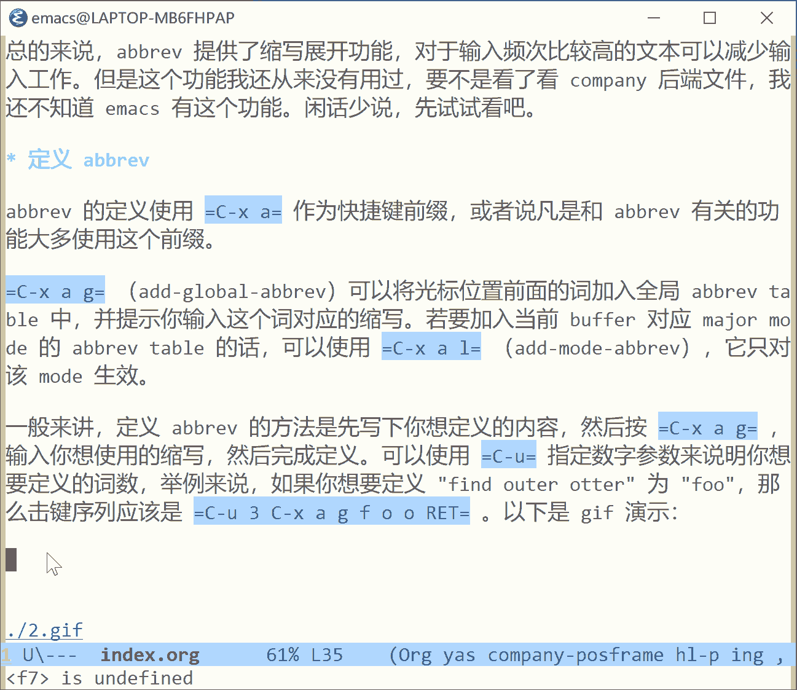
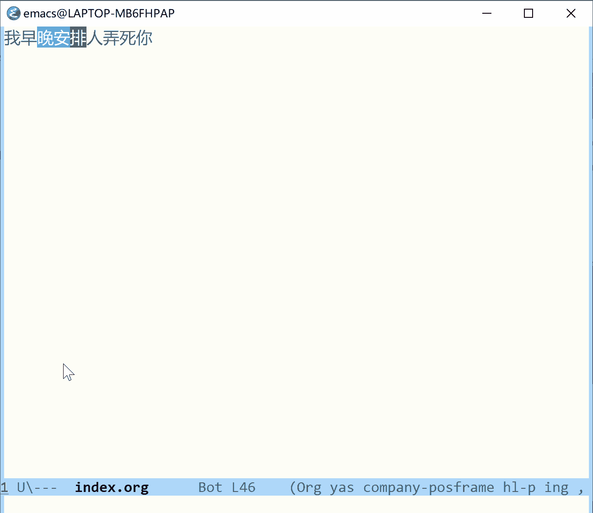
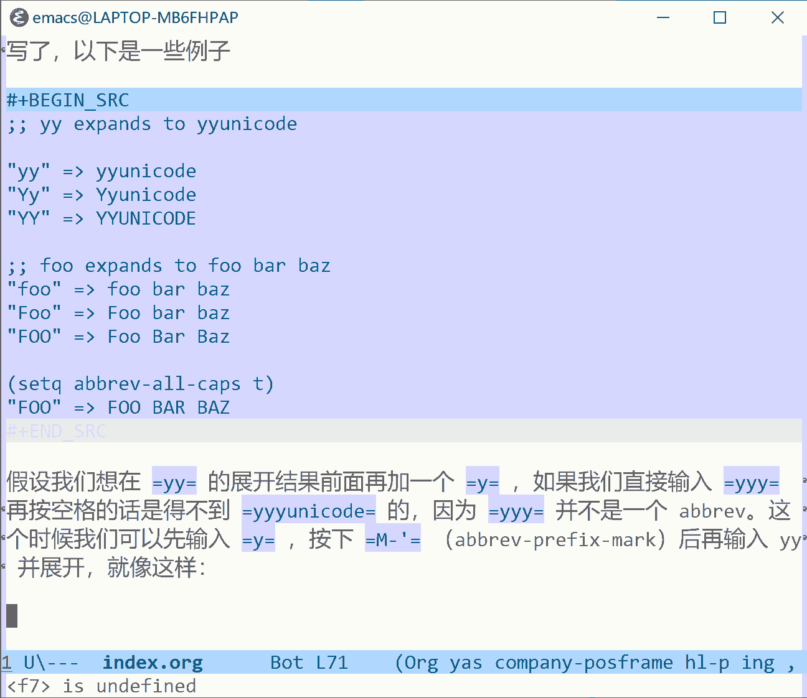
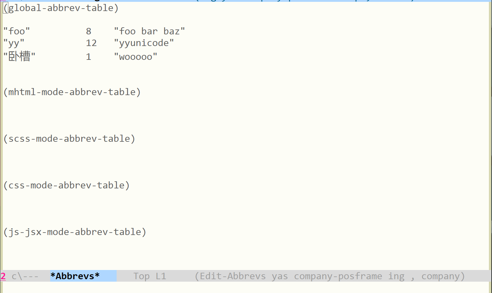
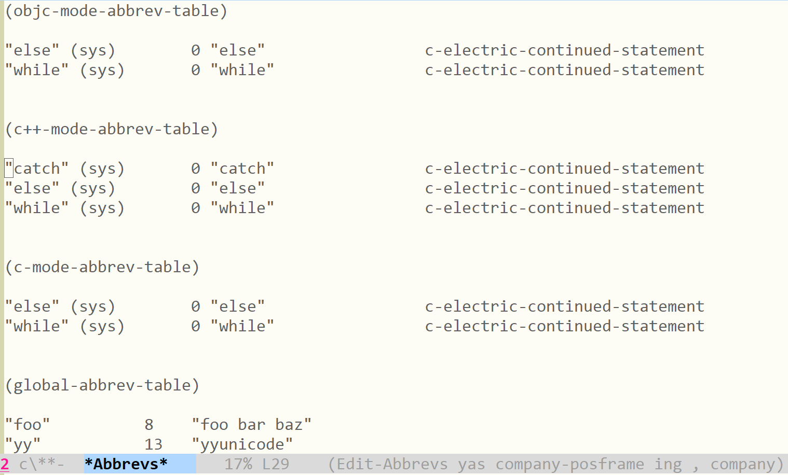

emacs 的 abbrev 使用介绍
Table of Contents
在准备学习 company-mode 的配置和使用时，我看到了 company-abbrev 这个后端。一来这是个 emacs 内置功能，可以用来学习一下 package 的编写。二来寒假有的是时间够我用在干闲事上，要不就写篇文章介绍一下 abbrev 吧。
本文简要介绍了 abbrev 的功能和使用，本文的大部分内容都是对官方文档的解释说明，并尽量保证覆盖文档内容（也就是抄文档）。录制的一些 gif 应该算是我做的工作（笑）。
本文使用的编程环境为 emacs 27.2 x86_64 on windows
1 什么是 abbrev
容易看出，abbrev 是 abbreviation 的缩写。这个功能的作用和 abbreviation 缩写到 abbrev 一个意思，即可以把短词展开得到完整表达。下面这段话是我对文档1的翻译。
当你在 abbrev 后面插入单词分隔符（空格等非数字字母字符）时，缩写会展开得到完整表达，举例来说的话，如果我们定义了 foo 为 "find outer otter" 的缩写，输入 "f o o ." 会得到 "find outer otter"。
只有启用了 abbrev-mode ，才能在输入分隔符号的时候展开 abbrev。取消 abbrev-mode 不会丢弃掉定义的 arrbev，但是它们也不能自动展开了。可以使用
M-x abbrev-mode来打开/关闭 abbrev-mode。可以定义特定 mode 的 abbrev，它们只在特定 major mode 起作用。你也可以定义全局的 abbrev，它们对所有的 major mode 都起作用。当全局 abbrev 和特定 mode 的 abbrev 都存在时，优先使用特定 abbrev。
你可以在 emacs 中定义 abbrev，这不需要你打开 abbrev-mode。你还可以将定义的 abbrev 保存在文件中，这样就可以在之后使用。
总的来说，abbrev 提供了缩写展开功能，对于输入频次比较高的文本可以减少输入工作。但是这个功能我还从来没有用过，要不是看了看 company 后端文件，我还不知道 emacs 有这个功能。闲话少说，先试试看吧。
2 定义 abbrev
abbrev 的定义使用 C-x a 作为快捷键前缀，或者说凡是和 abbrev 有关的功能大多使用这个前缀。
C-x a g （add-global-abbrev）可以将光标位置前面的词加入全局 abbrev table 中，并提示你输入这个词对应的缩写。若要加入当前 buffer 对应 major mode 的 abbrev table 的话，可以使用 C-x a l （add-mode-abbrev），它只对该 mode 生效。
通常来讲，定义 abbrev 的方法是先写下你想定义的内容，然后按 C-x a g ，输入你想使用的缩写，然后完成定义。可以使用 C-u 指定数字参数来说明你想要定义的词数，举例来说，如果你想要定义 "find outer otter" 为 "foo"，那么击键序列应该是 C-u 3 C-x a g f o o RET 。以下是 gif 演示：

除了使用光标前面的词作为展开结果，我们也可以使用标记区域内的内容。在数字参数为 0 时（ C-u 0 ），若选择模式是激活的，那么会使用选中区域而不是光标前面的词，就像这样：

C-x a i g （inverse-add-global-abbrev）和 C-x a i l （inverse-add-mode-abbrev）的功能和上面介绍的相反，它们读取光标前的词作为缩写词，而要求用户你输入展开结果。这里我就不演示了。
除了绑定在快捷键上的这些函数，通过使用 define-global-abbrev 和 define-mode-abbrev 命令，我们也可以定义相应的 abbrev。要修改某个已定义的 abbrev 的话，使用新的定义将它覆盖就可以了。要删除某个 abbrev，可以使用负数作为定义该 abbrev 的参数再次定义，即 C-u - C-x a g 或 C-u - C-x a l 。要想删除所有定义的 abbrev 的话，可以使用 kill-all-abbrevs 命令。
3 abbrev 的展开
通过上面的 gif 我们也看到了，输入非数字非字母字符的时候，如果光标前面的词被定义为 abbrev，那么它就会变成展开结果。更准确地说，在插入任何不组成单词的字符时，光标前面的 abbrev 就会展开。abbrev 是不能含有非词字符的。
比较有意思的是，abbrev 的展开是大小写相关的，如果待展开的 abbrev 全小写，那么展开结果也是全小写，若 abbrev 首字母大写，那么展开结果也是首字母大写，若 abbrev 全大写，那么展开结果全大写。
对于多词展开的话，若 abbrev 全大写，那么每个词的首字母全大写，而不是内容全大写。如果设置 abbrev-all-caps 为非空值，那么多词展开结果就是全大写了，以下是一些例子
;; yy expands to yyunicode "yy" => yyunicode "Yy" => Yyunicode "YY" => YYUNICODE ;; foo expands to foo bar baz "foo" => foo bar baz "Foo" => Foo bar baz "FOO" => Foo Bar Baz (setq abbrev-all-caps t) "FOO" => FOO BAR BAZ
假设我们想在 yy 的展开结果前面再加一个 y ，如果我们直接输入 yyy 再按空格的话是得不到 yyyunicode 的，因为 yyy 并不是一个 abbrev。这个时候我们可以先输入 y ，按下 M-' （abbrev-prefix-mark）后再输入 yy 并展开，就像这样：

M-' 在前缀和 abbrev 之间临时插入一个 - ，并在展开后删除它，起到一个保护 abbrev 不受前缀影响的作用。如果我们不想让 abbrev 展开的话，我们可以在输入 abbrev 后按下 C-q 来告诉 abbrev-mode 不进行展开。
如果你输入了某些 abbrev 但是忘了定义它，或是定义但忘了进行展开，又或是忘了打开 abbrev-mode，那么你可以选中想要展开的区域，并使用命令 expand-region-abbrevs 来进行展开，它不在 abbrev-mode 下也能起作用。在想要一次性展开多个特定 abbrev 时，这个命令也很有用。
如果不小心展开了某个 abbrev 的话，你可以使用 Undo 来撤销展开，它会使你回到展开前的状态。你也可是使用 unexpand-abbrev 来进行撤销操作。
如果没有打开 abbrev-mode 的话，可以使用 C-x a e （expand-abbrev）来进行展开。它的行为与 abbrev-mode 有效与否无关。
4 abbrev 的编辑
要查看当前定义的 abbrev 的话，我们可以使用 list-abbrevs 或 edit-abbrevs 命令，它们两个的功能是一样的，只不过 list-abbrevs 使用另一窗口显示 *Abbrevs* buffer，而 edit-abbrevs 直接使用当前窗口。使用 list-abbrevs 我们可以得到这样的 buffer。

图中，用括号括起来的就是各 mode 对应的 abbrev table，这一行下面就是 table 中定义的各 abbrev。可见 global-abbrev-table 中有三个 abbrev。每个 abbrev 所在行的内容可分为三部分，分别是 abbrev 名字，展开次数和展开内容。根据展开内容，你可以进行频次分析，从而去掉不常用的 abbrev。
某些 abbrev 可能还带有 (sys) 标志（上面的图片体现不出来）。这些系统 abbrevs 是由各 mode 预定义的，你可以通过定义同名的自展开（展开得到自己）abbrev 来禁用它。
整个 *Abbrevs* buffer 是可编辑的，你可以添加，修改或删除各 abbrev。注意保证格式与标准格式一致。修改完后使用 C-c C-c 来使修改生效。随后就可以 kill 掉这个 buffer 了。
5 abbrev 的保存
使用 write-abbrev-file 可以将当前的 abbrev 定义写入一个文件中，以供之后使用。abbrev 使用 Lisp 表达式进行保存，表达式执行就会对这些 abbrev 进行定义。
举例来说，上面我定义的那些 abbrev 使用该命令保存到文本后得到的内容如下：
;;-*-coding: utf-8;-*- (define-abbrev-table 'global-abbrev-table '( ("foo" "foo bar baz" nil :count 8) ("yy" "yyunicode" nil :count 12) ("卧槽" "wooooo" nil :count 1) ))
read-abbrev-file 功能和上面的命令相反，它从文件中读取并定义 abbrev。 quietly-read-abbrev-file 功能和它类似，但是不会回显读取消息，它是个函数而非命令，一般在初始化文件中使用。如果在调用这些功能时使用的参数是 nil，那么它们会以 abbrev-file-name 的值作为文件名，它的默认值是 ~/.emacs.d/abbrev_defs 。这是标准的 abbrev 定义文件，emacs 在启动时会自动为你载入它。（若 emacs 以 batch 模式启动则不会）
如果你改变了 abbrev-file-name 中定义的 abbrev，那么 emacs 会在保存文件时自动帮你保存修改。这个特性可以通过设置 save-abbrevs 为空来禁用；若设置为 silently ，emacs 会在不询问你的情况下进行保存。
insert-abbrevs 和 define-abbrevs 和前面的命令类似，但是它们用于 buffer 而不是文件。 inser-abbrevs 会将目前有定义的 abbrev 定义插入当前 buffer 中，而 define-abbrevs 则会使用当前 buffer 内的 Lisp 表达式来定义 abbrev。
在将我定义的全局 abbrev 保存后（首次正式开始使用），调用 list-abbrevs 时就可以看到一些带有 (sys) 标志的 abbrev 了，它们的默认是禁用状态，即展开结果和 abbrev 相同。

除了名字，展开次数和展开内容外，还可以看到每行 abbrev 的最后还有一个函数。它与 emacs 的其他功能（autotype）有关，本文由于篇幅和选题所限，就不详细展开讲了。
6 动态 abbrev（dabbrev）
除了说主动定义 abbrev 后再使用外，我们还可以使用所谓的动态 abbrev，它不使用定义的 abbrev，而是从 buffer 中找到符合展开的词来进行展开。它不会主动触发，需要你主动使用它。
举例来说的话，当你输入了 "does this follow"，然后输入 "fo"，在按下 M-/ （dabbrev-expand）后会插入 "follow" 来作为 "fo" 的展开结果。这是因为 "follow" 是 buffer 中从头到当前位置离 "fo" 最近的，且以 "fo" 开头的词。当你多次按下 M-/ 时，emacs 会从后往前找匹配的内容来作为展开结果。在找完所有可能的结果后，它又会回到最初值。变量 dabbrev-limit 可用来指定从后往前找的最远距离（也就是最多往前找几个）。对该命令使用数字参数的话，就代表使用第参数个找到的内容来进行展开。
在找完当前的 buffer 后，继续使用 M-/ ，emacs 会在其他 buffer 中查找。 可用 dabbrev-check-all-buffers 和 dabbrev-check-other-buffers 来控制 emacs 是否查找其他 buffer。要控制 emacs 搜索其他 buffer 的行为，可以对 dabbrev-ignored-buffer-names 和 dabbrev-ignored-buffer-regexps 进行设置，前者是要跳过的 buffer 名字组成的表，后者是要跳过的 buffer 的名字匹配正则。如果 buffer 的名字符合两者之一，那么 emacs 会跳过该 buffer。
若使用负数作为 M-/ 的数字参数，那么 M-/ 会向下而非向上搜索，到达 buffer 末尾时再去其他 buffer 搜索，最后才考虑原 buffer 中向上的内容。（话说 emacs 27.2 中 M-/ 绑定的是 hippie-expand 而不是 dabbrev-expand ，不知是否是受到的影响，我使用负数参数达不到描述的效果，要看到这个效果得直接使用该命令了）
命令 C-M-/ （dabbrev-completion）进行补完而非展开。它会在 minbuffer 中列出所有找得到的展开内容来让你选择。
dabbrev 和 abbrev-mode 没有任何关系；使用 M-/ 进行展开和普通的 abbrev 没有关系。
关于 dabbrev 的配置，这里简单说几句：
- 可以用
dabbrev-case-fold-search来控制 dabbrev 的搜索是否大小写敏感。若为空则大小写敏感，若为case-fold-search（默认值）则与搜索大小写是否敏感同步 dabbrev-case-replace控制展开结果的大小写是否与缩写一致，若为t（默认），那么展开结果与缩写保持大小写一致，若为空，那么展开结果相当于直接复制过来。若为case-replace，那么就和替换的大小写一致。如果展开结果足够复杂（含大小写内容）的话，那么展开结果就是直接复制了dabbrev-abbrev-char-regexp用来判断那些字符可以用来组成词，它的值应该是一个正则，且该正则只能匹配一个字符。它的默认值是空值，空值具有特殊含义：dabbrev 由组成词的字符组成，但是它的展开可以是词或符号的序列。
7 后记
本文的主要内容就是简单介绍一下 abbrev 的使用，本想着具体分析一下 abbrev 的实现，结果发现还有 dabbrev 这个东西，如果两个都要看的话，文章肯定会长一大截，看着费劲写着也费劲，还是算了吧。由于 abbrev 的实现还涉及到 obarray 的使用，我先写完 elisp symbol 的介绍后再学习 abbrev 的实现也许会更好一点。
和 abbrev 相关的还有 autotype 相关的功能，比如 skeletions，tempo 和 hippie 等等。它们虽然在 emacs manual 中留有文档，但是主要内容还是在代码注释中。要想进一步学习的话可以先看看 emacs wiki 中的内容。这应该是远古时代的模板功能了，我现在正用着 company+yasnippet，但我也不清楚 yasnippet 与 tempo 的联系与区别，这可能需要一些考古的进行。
abbrev 这东西在 emacs manual 和 elisp manual 中都有，前者介绍用户界面，后者介绍代码接口。既然两份官方文档中都有，难不成这还是个比较重要的功能？之后有时间了再去看看。